Gloria FurnitureDesign case study · 6 min read
One long page that takes a furniture shopper from looking to choosing.
Gloria Furniture is a storefront concept: a single long page that opens with photos of furniture and ends with ten products, their prices and a place to ask for help.
- Role
- Visual design and page structure
- Team
- Solo
- Timeline
- 2021–22
- Why
- A brief I set myself. No client asked for it
- Platform
- Desktop web page, drawn 1920 pixels wide
- Scope
- One long landing page in five bands
- Method
- Layout, type and colour. No research behind it
- Status
- Visual concept. No shop behind it, not built, not tested
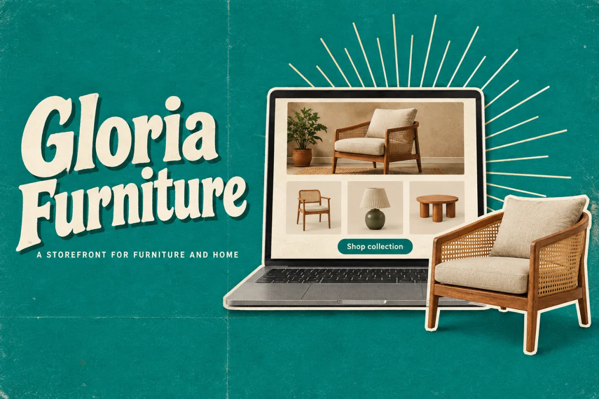
In short
- The problem: furniture is a visual purchase and a practical one. A shop's front page has to inspire first, then give names and prices.
- What I did: I set myself that brief and designed one long desktop page in five bands: a hero, categories, quality promises, two rows of products and a footer.
- The key idea: narrow the choice step by step. Photos first, then five categories, then ten products on one repeated card so they are easy to compare.
- Where it stands: a visual concept. There was no research and no testing, and there is no cart or checkout. The prices, warranty and contact details are illustrative.
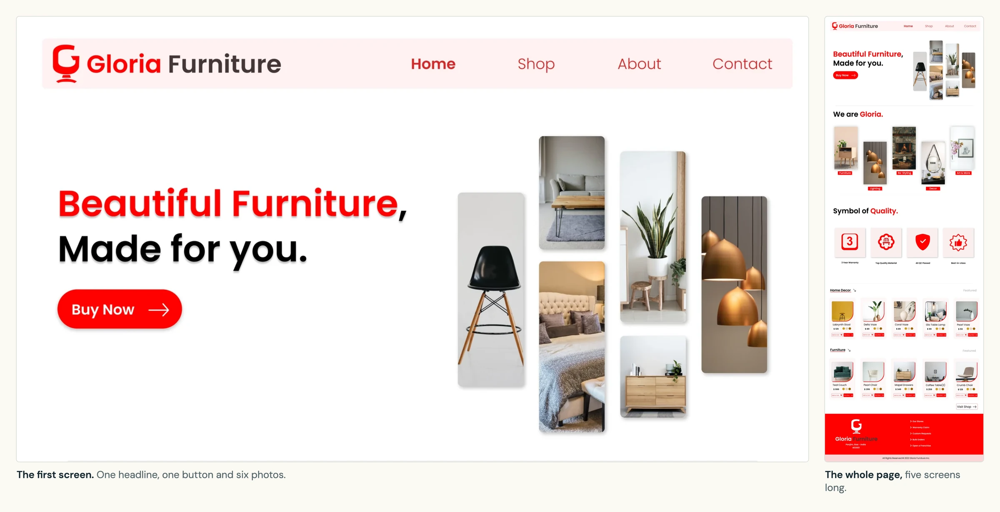
01 The brief
I set the brief: one page, from looking to choosing
No shop asked for this page. I set the brief myself, to practise designing a storefront. Furniture is a visual purchase and a practical one. A shopper wants to be inspired first, and then wants names and prices. I wanted one page that follows that order.
There was no research behind it and nobody tested it. So this page is about the design: how the long page is cut into bands, what each band looks like up close, and what the type, colour and layout really measure.
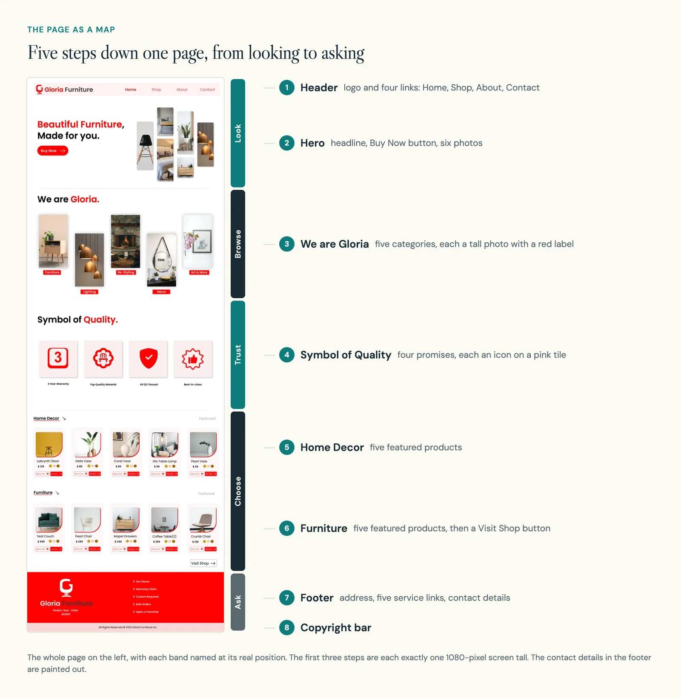
02 First screen
The first screen makes one offer
The first screen has one headline, one button and six photos. The headline is 88 pixels tall, the largest type on the page, split into a red line and a black line. The photos sit in four narrow columns at different heights.
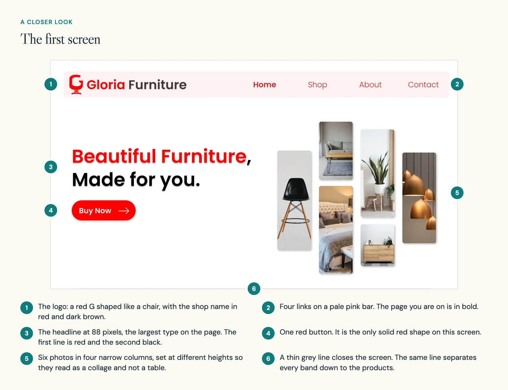
The trade-off: the button says Buy Now before a single product has been shown. Looking back, a label that promises browsing would suit this spot better.
03 Browse and trust
Five ways in, then four reasons to trust
The second screen offers five categories: Furniture, Lighting, Re-Styling, Decor and Art & More. Each is a tall photo with a red label. Every other photo sits lower, which keeps the row from looking like a table.
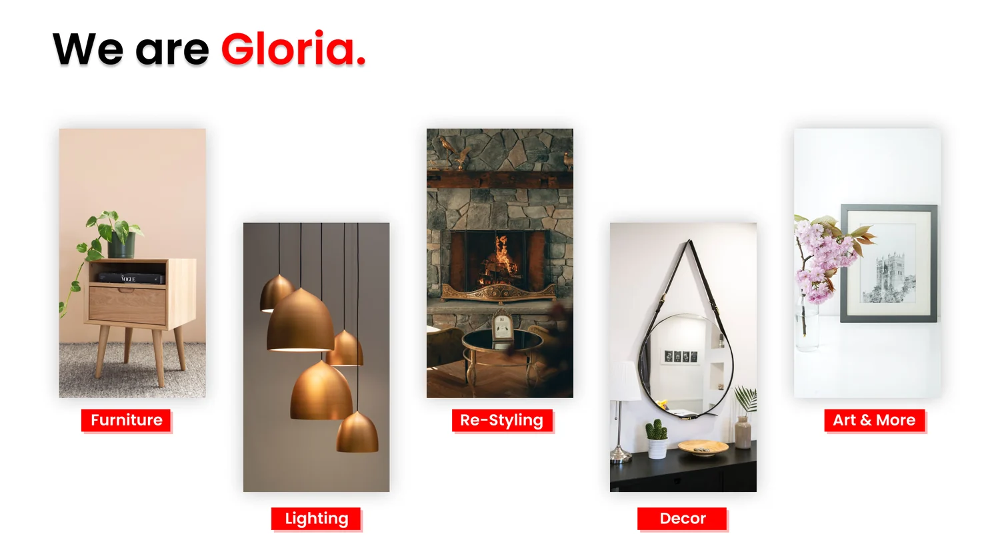
The third screen is about trust. Four icon tiles carry four promises: 3 Year Warranty, Top Quality Material, All QC Passed and Best-in-class.
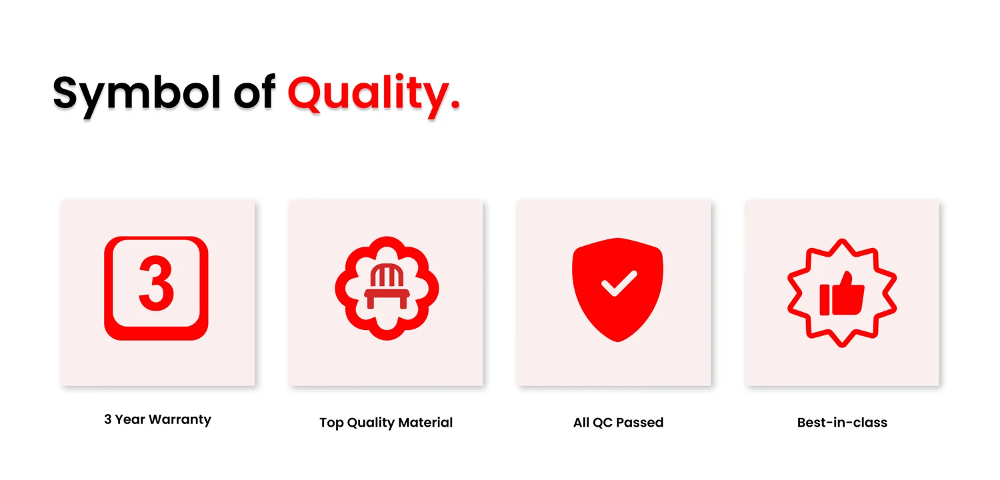
The trade-off: promises like these need real policies behind them. A concept can show where reassurance belongs on a page. It cannot make the claims true.
04 Products
Ten products on one card design
The last band before the footer holds two rows of five products, Home Decor and Furniture. All ten use the same card: photo, name, price, three colour dots and two buttons. Because the card never changes, the eye can run along a row and compare.
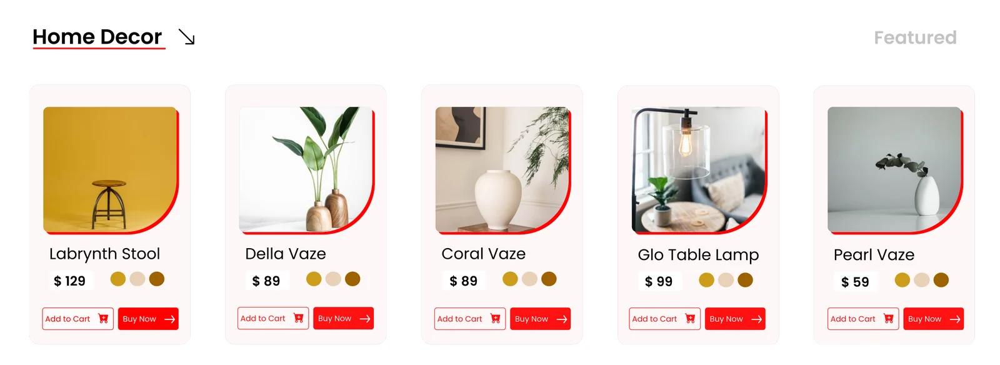
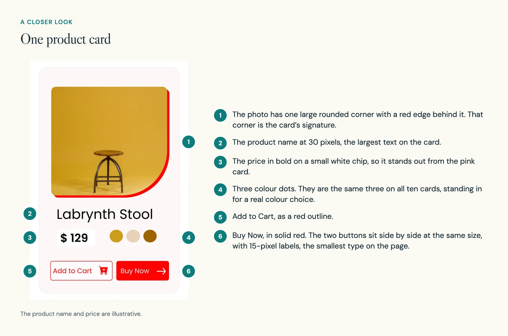
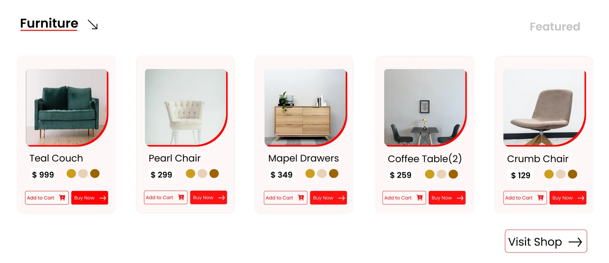
The weak point is the pair of buttons. Add to Cart and Buy Now sit side by side at the same size on every card, so neither is clearly the main one.
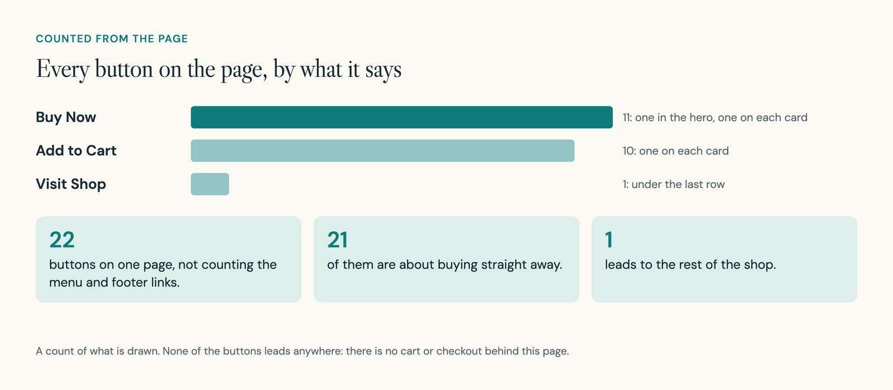
Today I would give each card one main action that opens a product page, and test that before offering instant purchase everywhere.
05 Type, colour, layout
Type, colour and layout, measured
I measured the artwork to see how tidy the system is. It uses ten type sizes. Two pairs are almost the same (88 and 85, 36 and 35), so fewer sizes would do the same job.
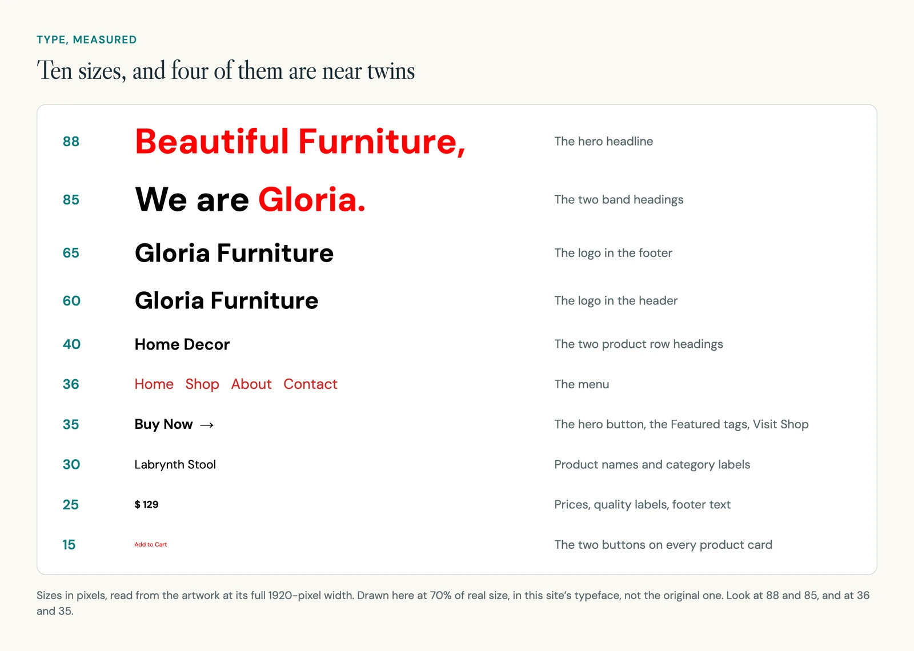
Colour is simpler. Half the page is white, about a tenth is one pure red, and four pale pinks sit behind the header, cards and tiles. The red is strong enough to lead the eye. But white text on it has a contrast of 4 to 1, just under the 4.5 to 1 usually asked of small text.
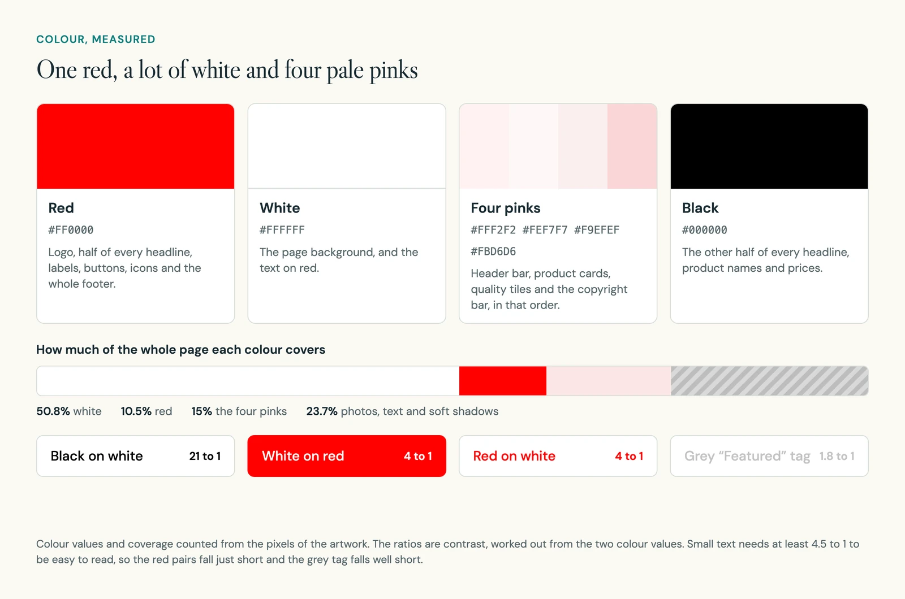
The three main rows each use their own column widths. So the edges of the category photos, the quality tiles and the product cards do not line up down the page.
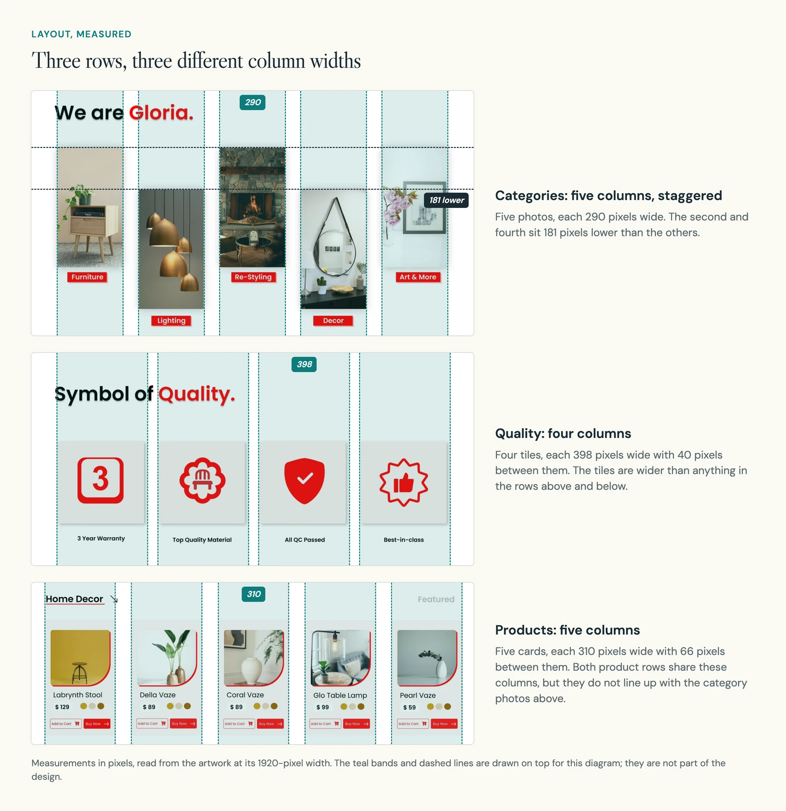
07 What comes next
What it would need before anyone could buy
What exists is one flat picture of a desktop page. To take it further, I would do these things in order.
- Design a product pageDimensions, materials, stock and delivery area. Those are the facts someone needs before buying furniture.
- Give each card one main actionThen test it: ask someone to find a product within a budget, compare two options and explain the delivery terms.
- Design it for a phoneThe page is drawn at one desktop width.
- Put real content inReal products, prices and policies in place of the samples.
- Tidy the systemFewer type sizes, one set of columns and stronger contrast for small text.
What I took from it: a good-looking product card still has to help someone decide what to do next.
Choosing a boat before making an enquiry.